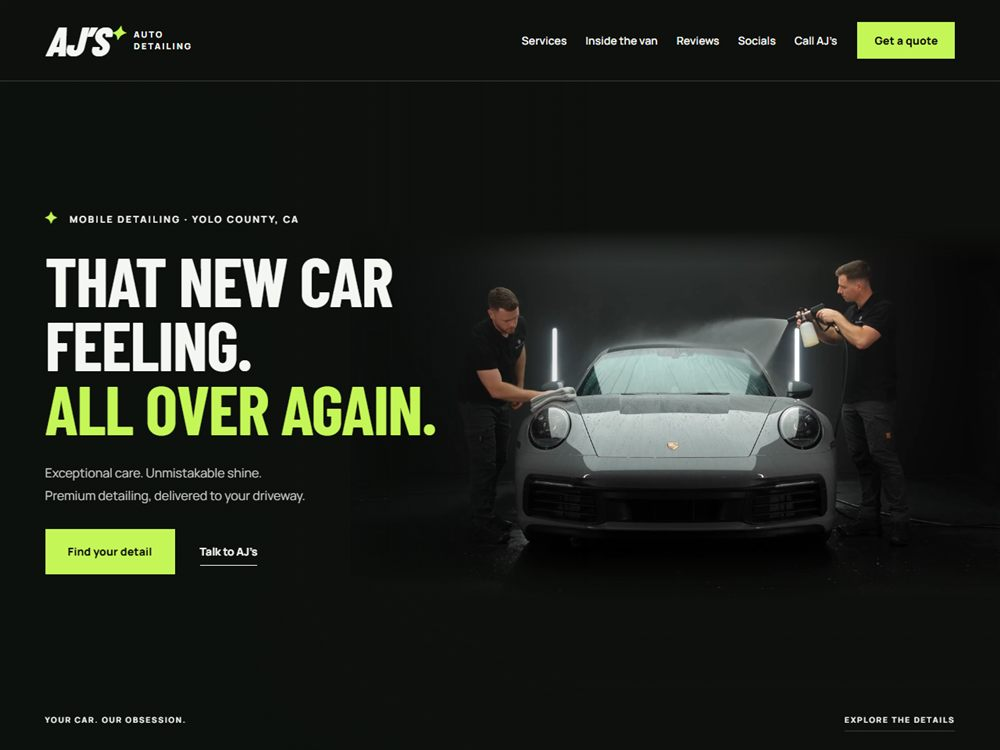
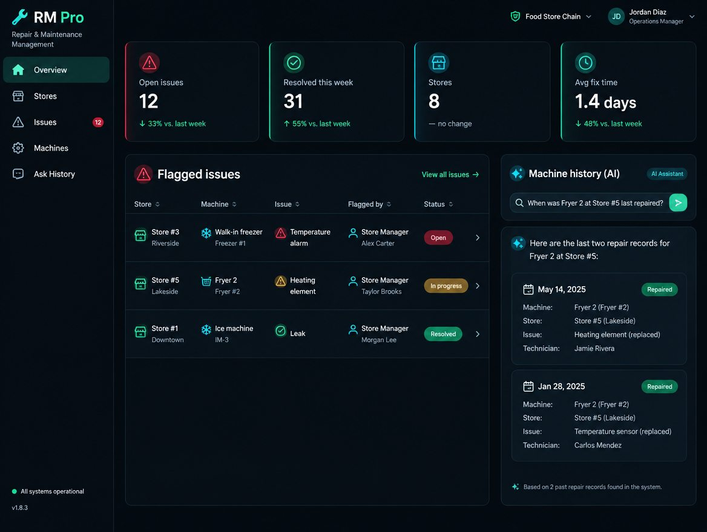
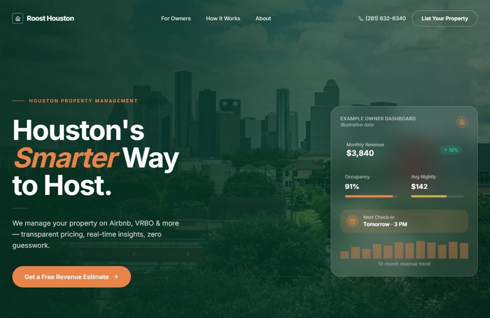
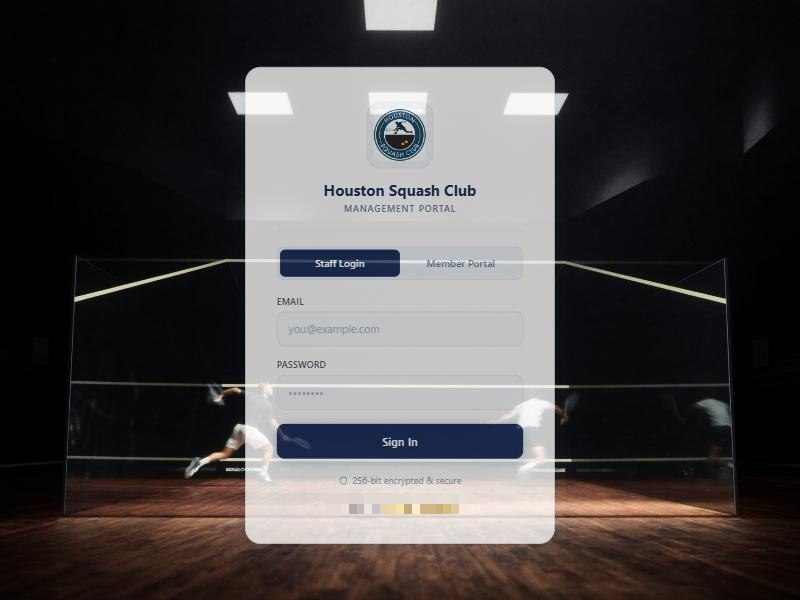
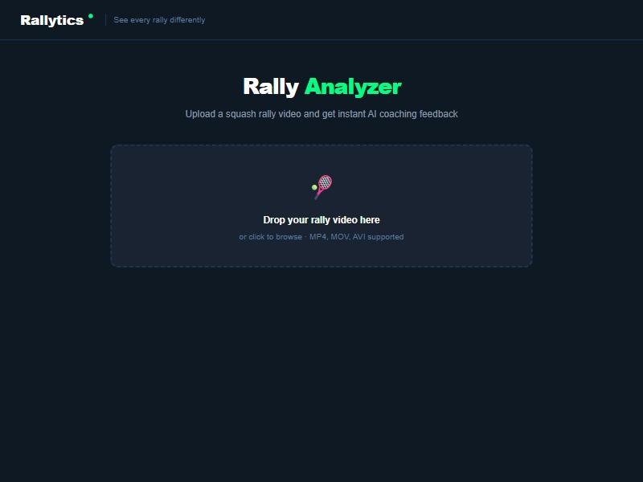
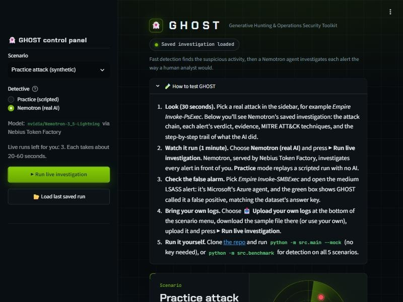

Websites & landing pages
Fast, mobile-first sites designed to turn visitors into booked calls.
- design + copy
- lead forms
- SEO
Roots builds the systems that run your business in the background: high-converting websites, AI agents that talk to customers, and automations that move leads, bookings, invoices and data on their own.
Start with one piece or let us wire up the whole system. Everything connects, so every part feeds the next.
Fast, mobile-first sites designed to turn visitors into booked calls.
Assistants trained on your business that answer, qualify and book around the clock.
Every enquiry captured, scored and followed up without anyone lifting a finger.
The repetitive admin that eats your week, handled by systems that run themselves.
Content, email and social that keep publishing while you focus on clients.
Custom internal apps and live reports that show what's happening across the business.
A look at projects we've designed and launched for businesses.

A premium website for a mobile detailing business that comes to the customer's driveway. Built to show off the work, make pricing easy to understand and turn visitors into quote requests.

Repair and management software for a group of food stores. Everyone in the hierarchy, from store managers up to head office, sees what's happening in every store, in real time.

The website and owner portal for Roost Houston, a company that manages Airbnb and VRBO properties for homeowners. Built to win new property owners and keep existing ones up to date.

A management app for Houston Squash Club with two sides: a staff and owner portal that runs the business, and a member portal where players see their own lessons and account.

Our own AI product for squash players and coaches. Upload a video of a rally and Rallytics breaks it down shot by shot, then shows what a better decision would have looked like.

GHOST (Generative Hunting & Operations Security Toolkit) hunts for attacks in a company's logs, investigates each alert the way a human security analyst would using NVIDIA Nemotron served through Nebius Token Factory, and recommends fixes that a person approves.
Projects currently in development at Roots.
Final testing and the judging submission for our AI security analyst, due October 30, 2026.
An AI document suite for healthcare teams, built to read, organise and act on paperwork faster.
Tell us what's slowing your business down and we'll show you what we'd build.
Book a free auditHere's an example run of a typical Roots lead workflow. A visitor fills in a form, and the system does everything a team member would have done, logging every step as it goes.
We map how your business runs today and find the tasks costing you the most time.
A clear plan: what we automate, which tools connect, and the hours it saves.
We build, test with real data and train your team. Nothing goes live without your sign-off.
We monitor every workflow, fix what breaks and add new automations as you scale.
You work directly with the people doing the work, from the first call to launch day. Every project is led by our leadership team and delivered with the same AI and automation systems we build for clients, so you get the speed and output of a much larger operation, with no account managers or hand-offs in between.
Rizwan is the first person you'll speak to at Roots. He runs the free automation audit, scopes each project with you and keeps you updated from kickoff to launch, so you always know what's happening and why.
Rizwan is also owner and co-founder of Roost Houston, a short-term rental management company. He knows first-hand what it takes to run a service business, and where the right systems give you hours back every week.
Zuhreen looks after every new enquiry that comes into Roots. Each lead gets a fast, personal reply, a clear next step and a smooth handover into the audit, so no business that reaches out is ever left waiting.
From first contact to a signed project, Zuhreen keeps the pipeline organised and makes sure you always know who to talk to and what happens next.
Every project is quoted after the free audit, so you only pay for what your business actually needs.
For new businesses that need a strong online base.
For businesses ready to stop doing admin by hand.
For teams that want AI running across the whole operation.
No. We handle setup, integrations and testing. You get simple instructions and a team to call when you need a change.
Most of the ones you already use: Google Workspace, Microsoft 365, HubSpot, WhatsApp, Stripe, Calendly, Shopify and more. If your tool has an API, we can usually connect it.
Only if you want it to. Every agent follows rules you approve, and anything sensitive is handed to a person on your team.
A website usually takes two to three weeks. A full automation setup typically takes four to eight weeks, depending on how many systems are involved.
We monitor your workflows, fix anything that breaks and suggest new automations as your business changes.
Share a little about your business and we'll come back with the first three things we'd automate.